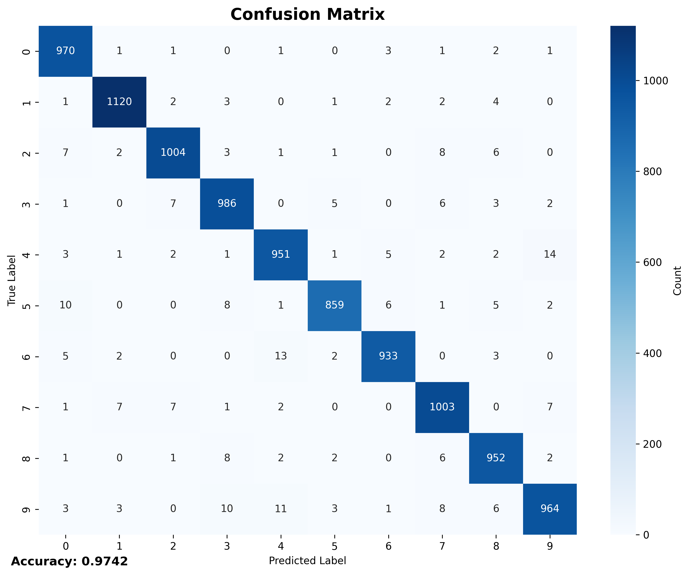

Confusion Matrix & Phân tích lỗi
Phân tích lỗi phân loại
Đặc điểm confusion matrix
• Đường chéo chính đậm: tỷ lệ dự đoán đúng cao
• Độ chính xác tổng thể: 96.30% (trên test set)
• Validation accuracy: 96.53% (tại epoch 18)
• Phần lớn lỗi nằm rải rác không tập trung
Phân tích kết quả
• Mô hình đạt độ chính xác cao trên tập validation
• Test accuracy (96.30%) gần với validation accuracy (96.53%)
• Chênh lệch nhỏ cho thấy mô hình không bị overfitting
• Early stopping hiệu quả tại epoch 28
Nhận xét
• Mô hình hội tụ tốt sau 18 epochs
• Gradient ổn định trong quá trình training
• Kiến trúc MLP phù hợp với bài toán MNIST
• Tổng thể mô hình đạt độ chính xác cao và ổn định
Visualization Confusion Matrix

Ma trận nhầm lẫn trên tập test (10,000 mẫu)